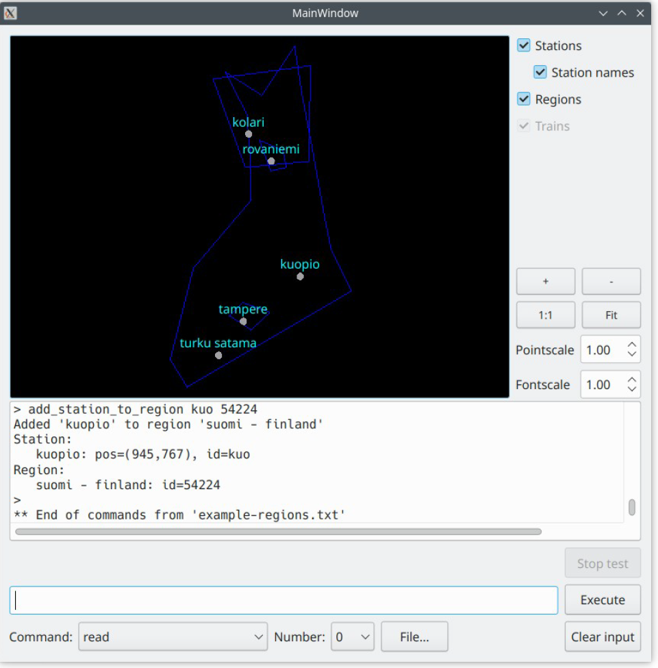

FINLAND TRAINSTATIONS
Description
A C++ project features a user interface that displays train station connections throughout Finland and includes effective data structures and algorithms for finding paths among them.
- Implement Simple Algorithms and Evaluate their performance
- Enter information about railway stations, train departures, and administrative reegions then display routes connecting them
- Algorithm to perform simple route search
